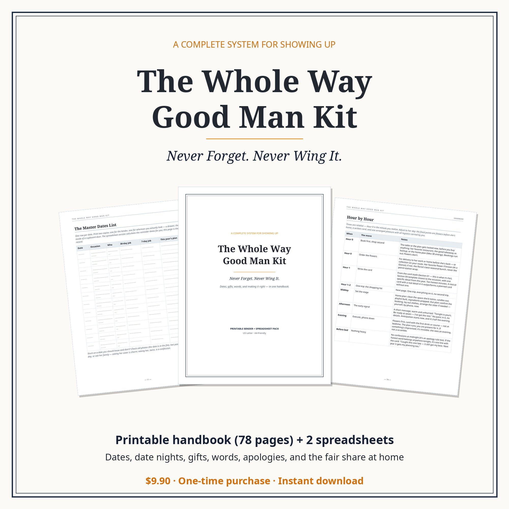
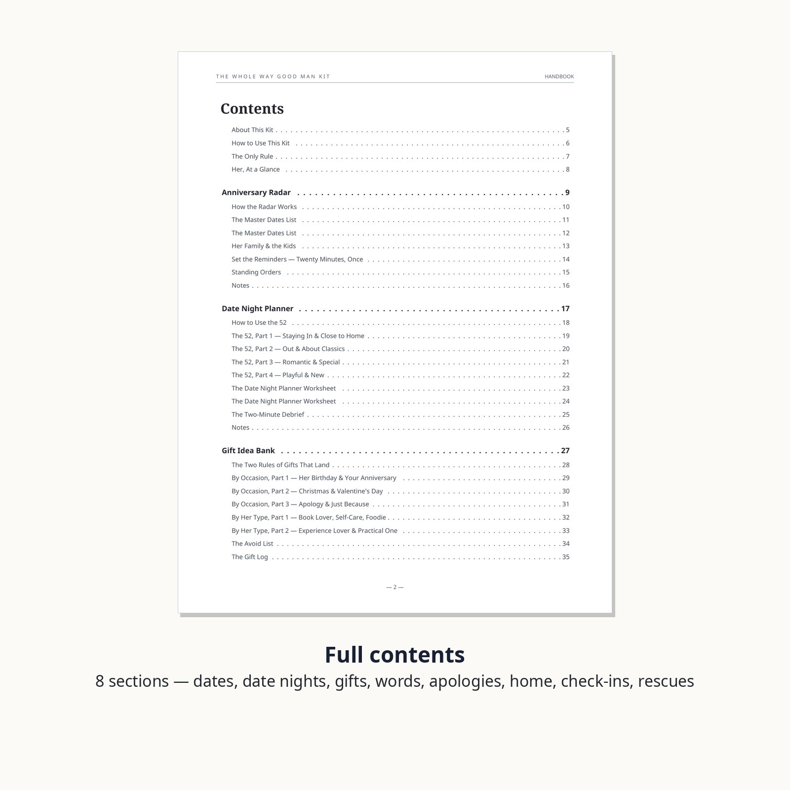
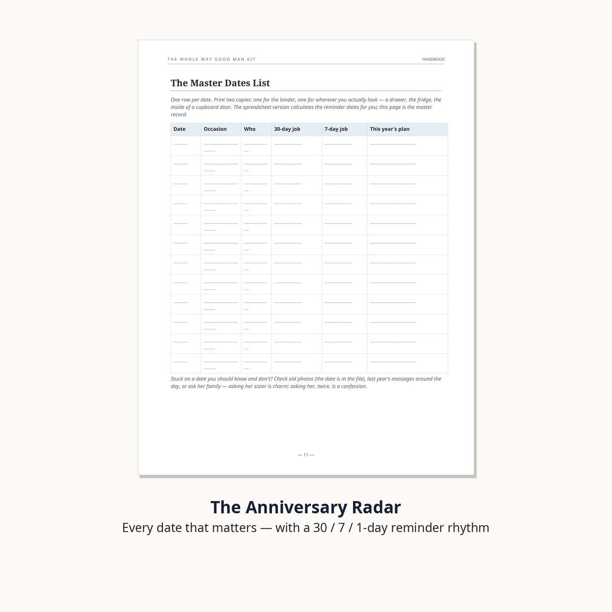
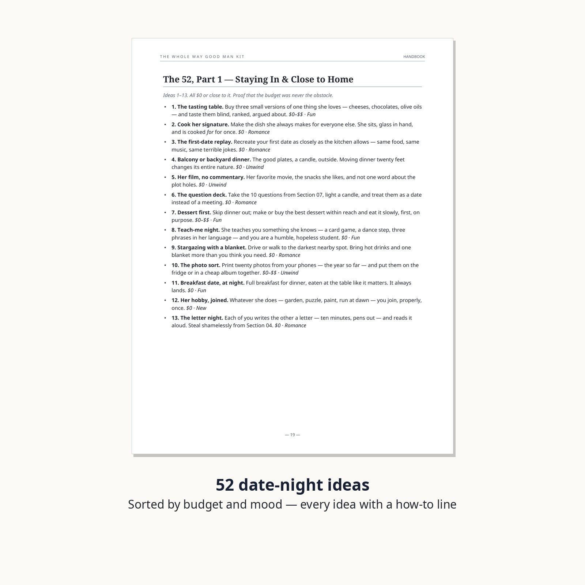
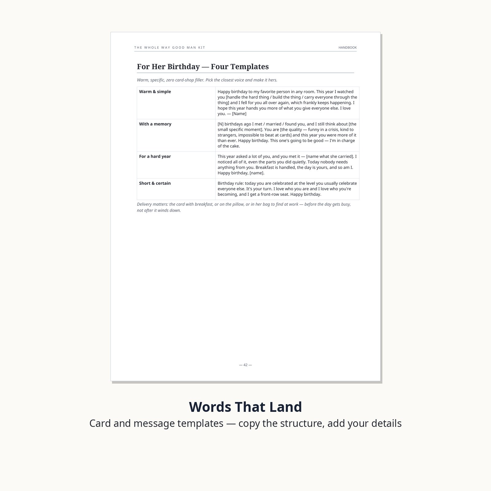
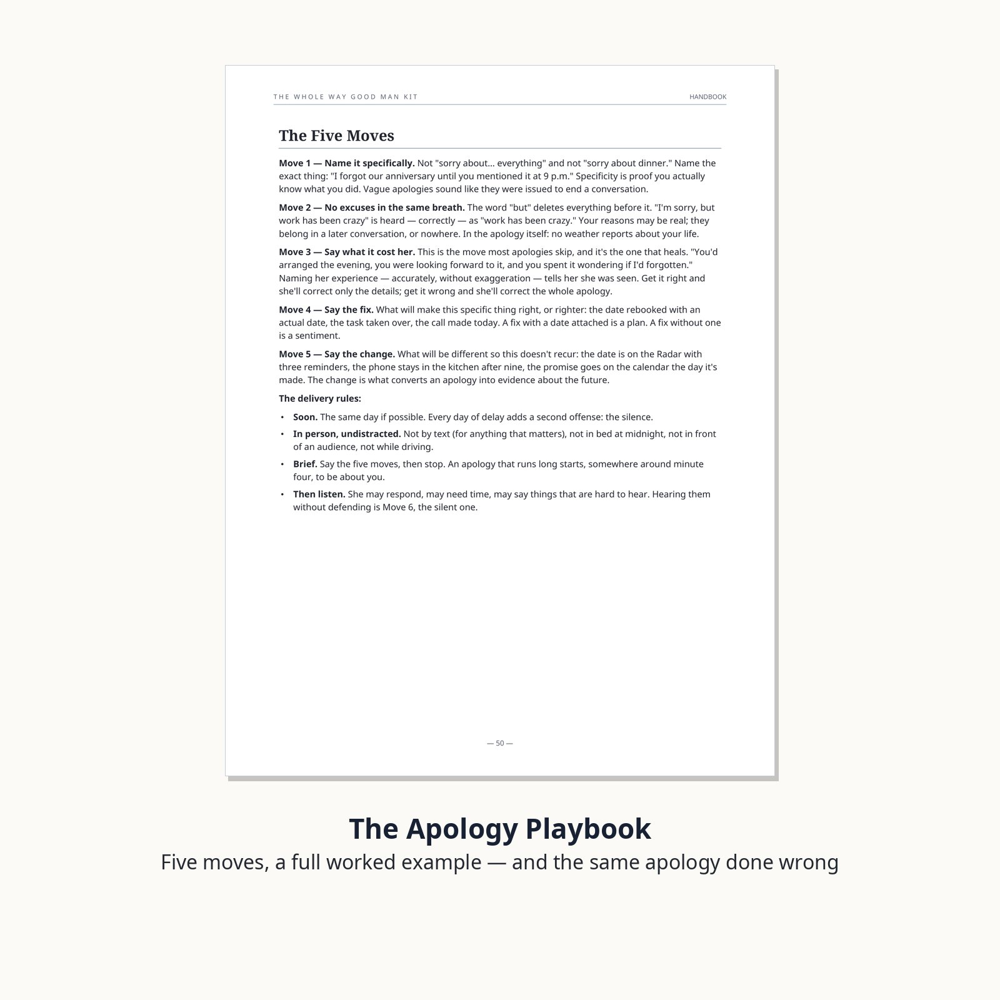
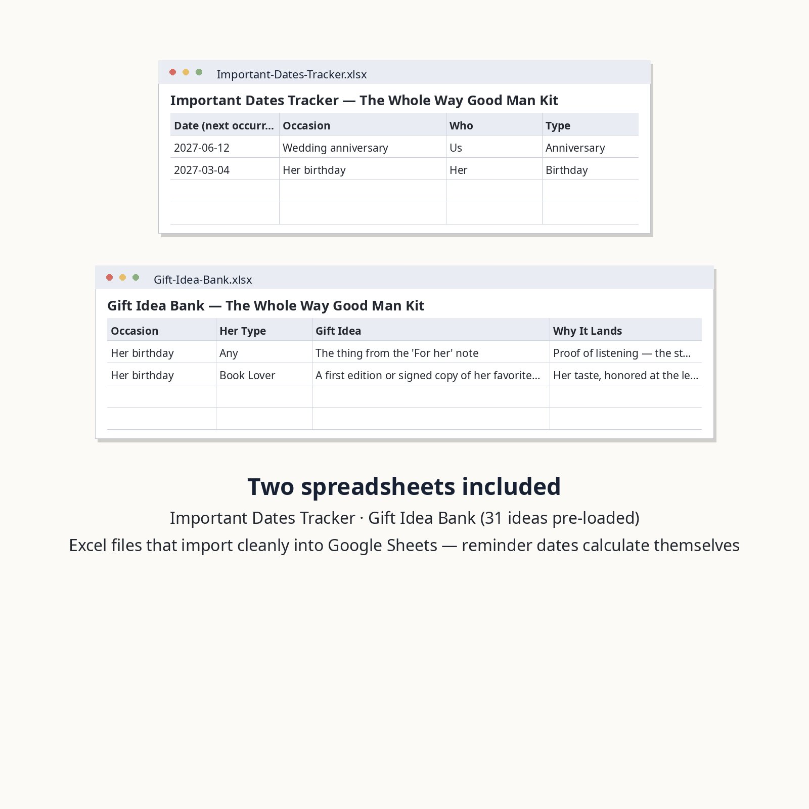

The Whole Way Good Man Kit
Never forget. Never wing it. Being good at this was never about caring more — it's about remembering on time. So here's the system: every important date on a radar with reminders, 52 date nights pre-invented, a gift bank that runs on listening, words that land, an apology that actually repairs, and a fair split of the invisible work at home.
$9.90 one-time payment
Buy the Good Man KitSecure checkout by Creem — taxes are handled by Creem at checkout. Instant download after purchase. Prefer the full store listing? View this product on Creem.

The moment this is for
Picture the morning of your anniversary — except this time it isn't a surprise. Three weeks ago a small reminder turned it into three small, calm jobs: book the place, pick the gift she'd actually hinted at in March, write the card before the day itself. No panic, no petrol-station flowers, no apology doing the work that planning should have done.
That's the whole idea of this kit. The anniversary didn't get forgotten because he doesn't care — it got forgotten because it lived in his head, next to four hundred work things. Date night doesn't die of no love; it dies of "I don't know, what do you want to do?" And most apologies don't repair anything because they're vague, or they contain the word "but." This kit takes the remembering, the planning and the repairing out of your head and puts them into a system that runs on paper.
What you get
- The Handbook (PDF, US Letter, A4-friendly) — 78 pages, 8 sections, every one ending in something you fill in, print, or do:
- Anniversary Radar — every date that matters on one list, with a 30 / 7 / 1-day reminder rhythm that turns panic into three small, calm jobs.
- Date Night Planner — 52 date ideas, one per week, sorted by budget ($0 / $$ / $$$) and mood (unwind, romance, fun, new), each with a how-to line, plus a planner worksheet and rating log.
- Gift Idea Bank — ideas sorted by occasion (birthday, anniversary, Christmas, Valentine's, apology, just because) and by her type (book lover, self-care, foodie, experience lover, practical), an avoid list, and a gift log.
- Words That Land — card and message templates for birthdays, anniversaries, ordinary Tuesdays, thanks, and apologies — plus a say-this-not-this table that fixes most cards.
- The Apology Playbook — the five moves of an apology that repairs, a full worked example with every move labeled, the same apology done wrong with every failure labeled, and a fill-in worksheet.
- Fair Share at Home — the invisible-work inventory, a full household task list, and an ownership worksheet with agreed standards, so neither partner is the other's manager.
- Monthly Check-In — thirty minutes a month: setup, ground rules, 10 questions in order, and a record sheet.
- The 24-Hour Rescue — forgot, and it's today? An hour-by-hour plan, a one-trip shopping list, and the morning-after fix that makes it the last rescue.
- Her, At a Glance — the one page of sizes, favorites, and preferences that powers every gift and date in the kit.
- Important Dates Tracker (xlsx + csv) — enter each date once; the 30-day, 7-day, and 1-day reminder dates and a days-left count calculate themselves. Works in Excel, Apple Numbers, and Google Sheets.
- Gift Idea Bank spreadsheet (xlsx + csv) — the handbook's ideas pre-loaded (31 rows), with room for every hint she drops, and a Given column so nothing gets repeated.
- Free updates for this edition — if we revise worksheets or add pages to this kit, buyers get the new files.






The eight sections, plus the page that powers them all
Who this is for
- Men who care and know it — and whose follow-through doesn't always prove it.
- Anyone buying for a husband or boyfriend who means well and plans badly. The system works best when he runs it himself; hand it over and let the dates start arriving.
- Couples who want the invisible work shared on paper instead of argued about at midnight.
Who this is not for
- Anyone looking for manipulation tricks, "alpha" scripts, or lines to win arguments. This kit is about showing up, not performing.
- Anyone who wants the relationship run for them. This is a system for doing it yourself — remembering, planning, and repairing in person.
- A substitute for professional help where that's what's needed. The handbook says so itself, in the front.
FAQ
How is it delivered?
Instant download after purchase: one zip with the handbook PDF and both spreadsheets (xlsx + csv). Print the whole handbook or just the worksheets; it's US Letter and prints cleanly on A4 too.
How do the spreadsheets work with Google Sheets?
They're standard .xlsx files. Upload to Google Drive and open with Sheets — formulas included — or use them in Excel or Apple Numbers. CSV copies are included as well.
Is this a book of advice to read, or a tool to use?
A tool. Every section ends in something you fill in, print, or do: the dates list, the date-night log, the gift log, the ownership worksheet, the check-in record. The reading supports the doing.
I'm buying it for my partner. Will it land as criticism?
The tone is deliberately zero-preach: it's written as a system for a man who already cares, not a verdict on one who doesn't. The front of the handbook says exactly that.
What's your refund policy?
This is a digital product delivered in full at purchase. Refunds follow the selling platform's policy for delivered digital goods; we don't promise unconditional refunds. That said, if the files arrive broken or incomplete, contact us and we will fix the delivery or refund you — a defective download is on us, always.
Was AI used to make this?
Yes. This product was produced with AI assistance and human editorial review, and it's disclosed here and in the handbook rather than hidden.
Will this guarantee a better relationship?
No — and be suspicious of any kit that promises that. This is an organizing system for remembering, planning, and repairing: it makes sure the caring part stops depending on memory. The rest is still yours to do, in person.